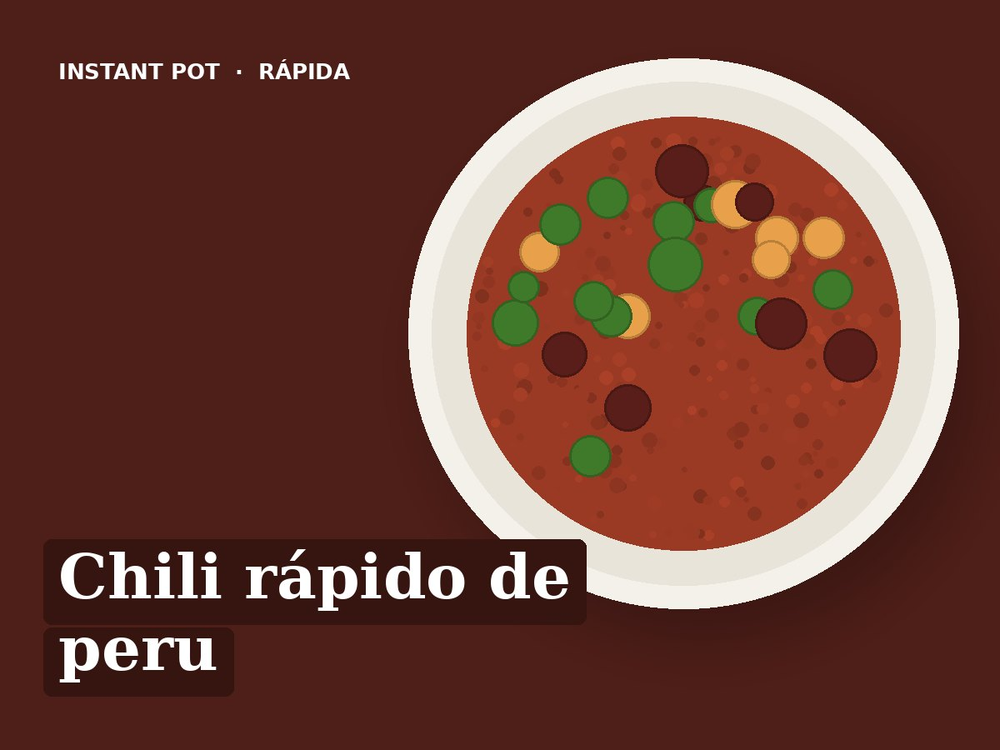

Chili rápido de peru
Ingredientes
- 300 g de peru picado
- ½ cebola
- 1 pimento
- 1 lata de feijão encarnado (escorrido)
- 200 g de polpa de tomate
- 100 ml de água
- 1 colher de chá de cominhos
- 1 colher de chá de colorau
- 1 colher de sopa de azeite
- Sal q.b.
Preparação
- Saltear (alto): azeite, cebola e pimento, 2 minutos. Juntar o peru e as especiarias e alourar 3 minutos.
- Deitar a água e raspar bem o fundo. Juntar o feijão e o sal. Por cima a polpa de tomate, sem mexer.
- Pressão alta, 5 minutos. Libertação rápida.
- Mexer e servir com arroz, batata-doce ou iogurte natural.